{kind=link}
{kind=link}
{kind=link}
{kind=link}
{kind=link}
module 04
klinisch redeneren
acute cardiologie op de SEH
Herken ritmestoornissen en triageer onder tijdsdruk via 6 casussen.
Eén canvas voor medu.game — kleur, typografie, tokens, componenten, web-patronen en de cast van 3D-characters. Gebouwd op het huisstijlhandboek van medu.health.
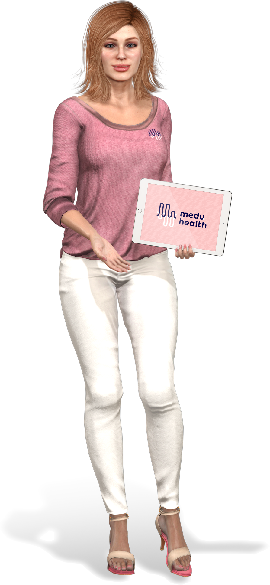
Dark blue draagt het merk; pink geeft het warmte. Light en darker pink werken als achtergrond en accent — dark blue is altijd de structurele ink.
Display momenten in MuseoModerno Medium (lowercase, signature van de wordmark). Body en UI in Fieldwork Geo — Light voor copy, Regular voor sub-titels, Demibold voor knoppen en H1.
Het logo bestaat uit een woordmerk en een beeldmerk: de golfvorm die kennis, puls en beweging samenbrengt. Gebruik minimaal 110 px op screen.
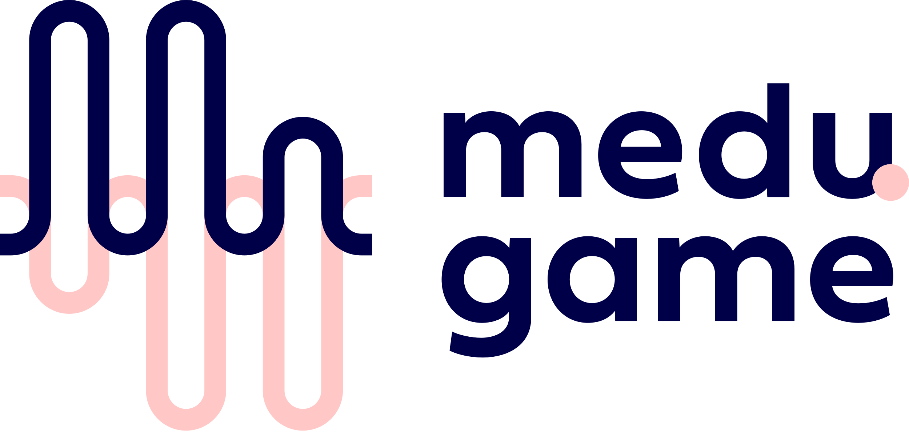
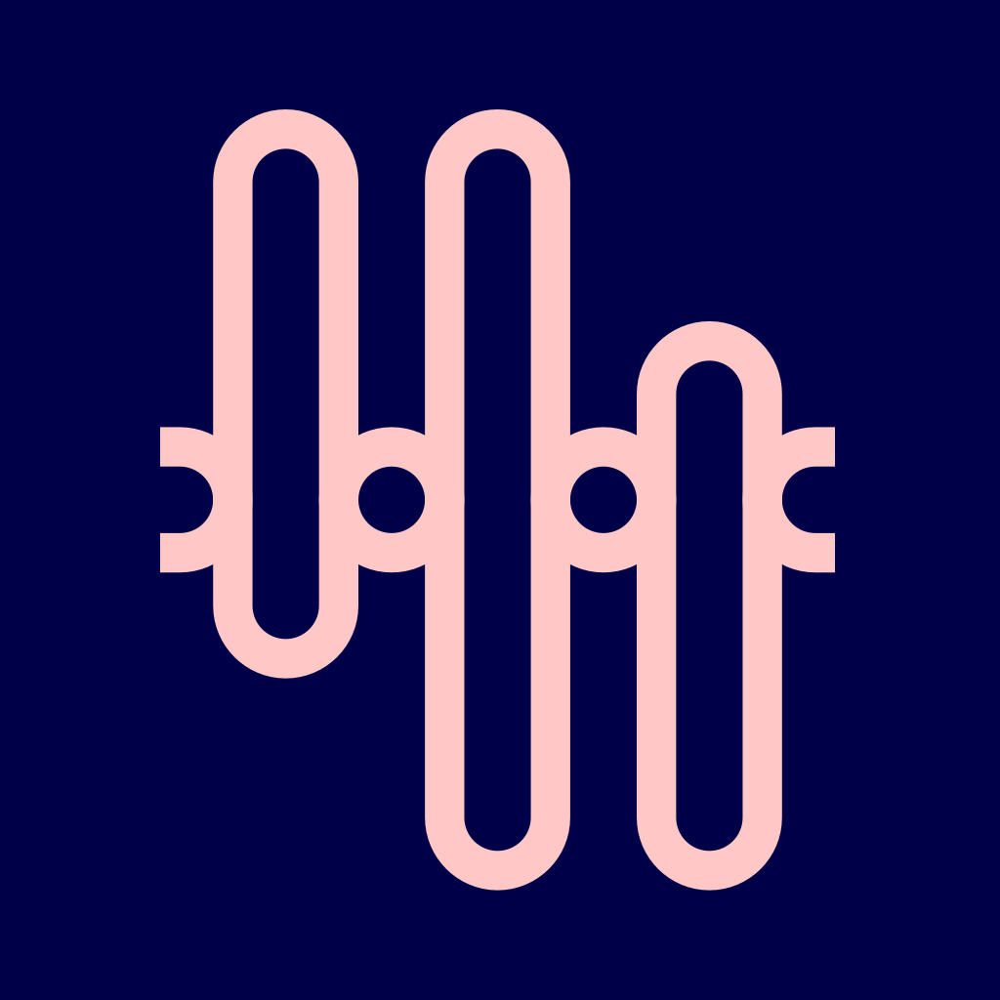
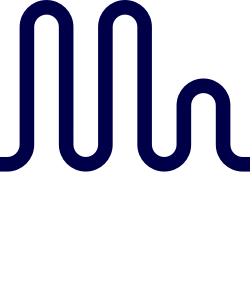
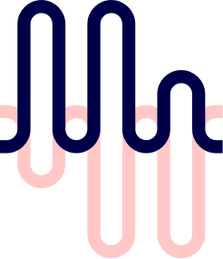
Houd rondom het logo minimaal één 'lusbreedte' als veilige marge. Niets mag deze ruimte doorkruisen.
Schaal het horizontale logo nooit kleiner dan 110 px. Onder die grens gebruik je het solitaire beeldmerk.
Het patroon ontstaat door de loops van het beeldmerk te laten herhalen, te schalen of te laten stromen. Subtiel als textuur, krachtig als hero-vlak.
Lijndikte ≈ 18–22% van de loop-hoogte. Altijd round caps. Nooit dunner dan 14px op screen.
Loops mogen oversized — laat ze uit het kader lopen. Eén volledige zigzag per kaart is genoeg.
Pink op donkerblauw (primair), blauw op pink (inverted), of pink-on-pink met 55% opacity (tonal).
Knoppen, badges, invoervelden — gedragen door dezelfde vier kleuren, dezelfde twee fonts, dezelfde afgeronde lussen.
Tim, Lotte en 11 collega's zijn vandaag bezig met de module acute cardiologie.
Herken ritmestoornissen en triageer onder tijdsdruk via 6 casussen.
Realtime triage-simulatie met 4 binnenkomende patiënten.
Actuele richtlijnen, klinische keuzes, korte quiz aan het eind.
Eén spacing-ladder, vier radii, drie shadows. De naam = het aantal pixels — geen mentale conversie nodig.
1.75px stroke, stroke-linecap: round. Nooit gevuld. Lucide is de approved CDN-set.
Kant-en-klare secties die als HTML-blok in Moodle (Page/Book/Edwiser) passen.
Train je zorgteams met levensechte scenario's. ABCDE, ECG-interpretatie, (Cardiac) ALS — altijd beschikbaar, altijd bijgewerkt aan de richtlijnen.
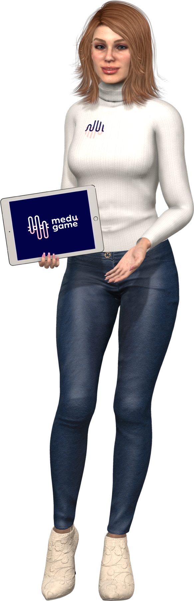
Acht nieuwe casussen, direct gekoppeld aan de 2026 richtlijn. Oefen het volledige ALS-algoritme — zonder risico.
Maak fouten zonder gevolgen. Train onbeperkt op scenario's die in de praktijk zeldzaam maar kritisch zijn.
Leer tussen je diensten door. Op telefoon, tablet of computer — content die past in jouw rooster.
Een virtuele expert beoordeelt je keuzes in real-time en onderbouwt met de achterliggende theorie.
Voor zorgprofessionals en BHV'ers — van verpleegkundigen en artsen tot medewerkers die bedrijfshulpverlening in hun rol hebben. Ook geschikt om bestaande e-learnings te verrijken of als voorbereiding op een fysieke cursus.
Een individuele licentie is geldig voor 1 jaar. Team- en Enterprise-abonnementen lopen op maandbasis of jaarlijks, naar keuze.
Ja. Medu.game werkt volledig in de browser, en er is ook een mobiele app voor iOS en Android zodat je offline door scenario's kunt gaan.
Jazeker. Onze content is beschikbaar via een LTI-koppeling. Single Sign-On is standaard op Team en Enterprise.
30 minuten, een rondleiding door het platform, en een voorstel op maat.
3D-renders die we gebruiken in hero's, onboarding, scenario covers en empty-states. Gebruik altijd op een merkkleur, voeten op de onderrand, copy ademt links.
guide voor onboarding en marketing · arts voor klinische scenario's · ambulance voor acute zorg en BHV.
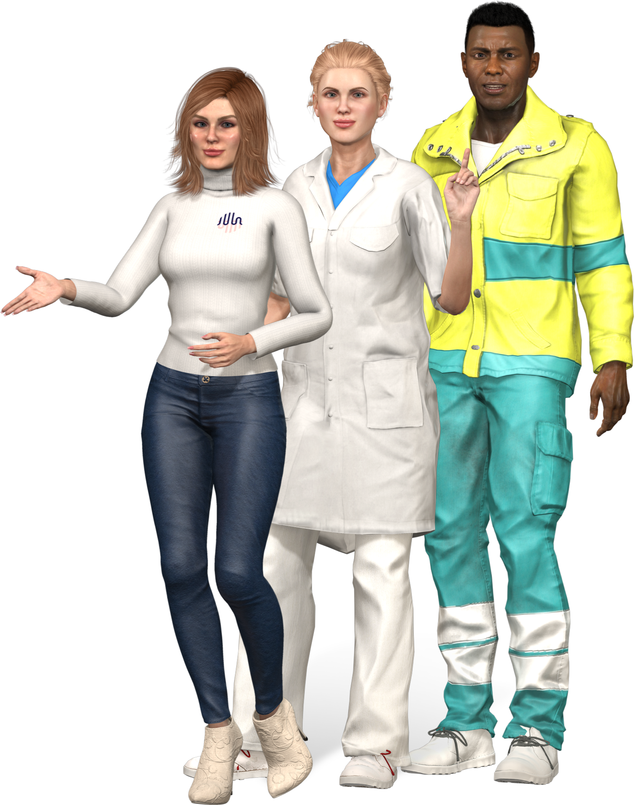
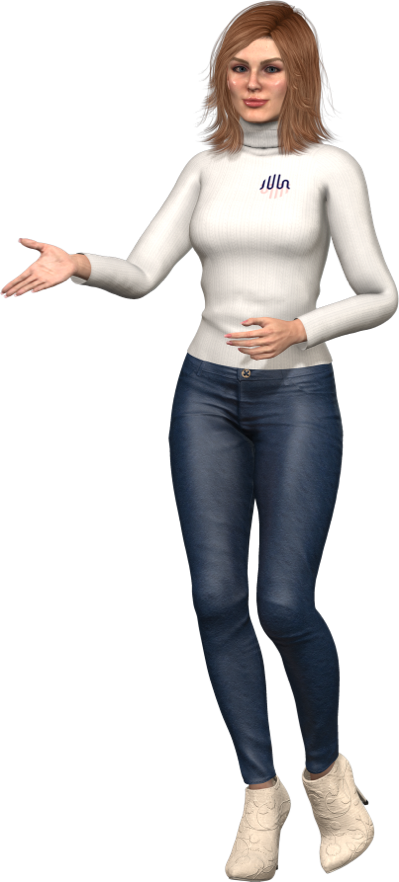
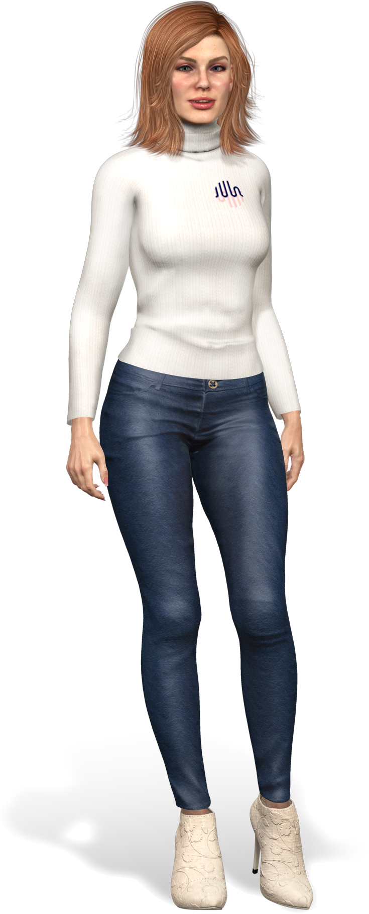
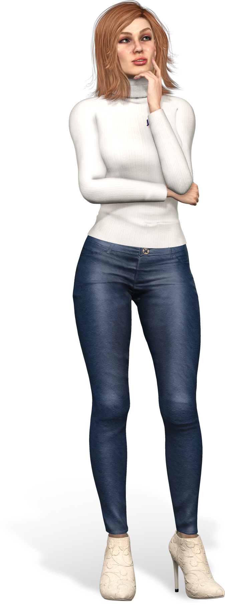
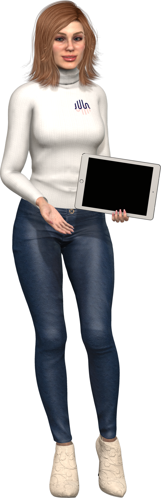
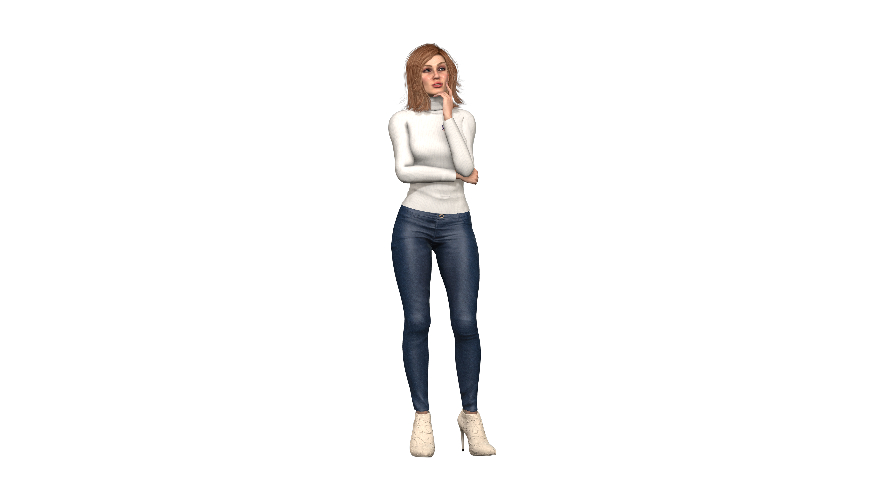
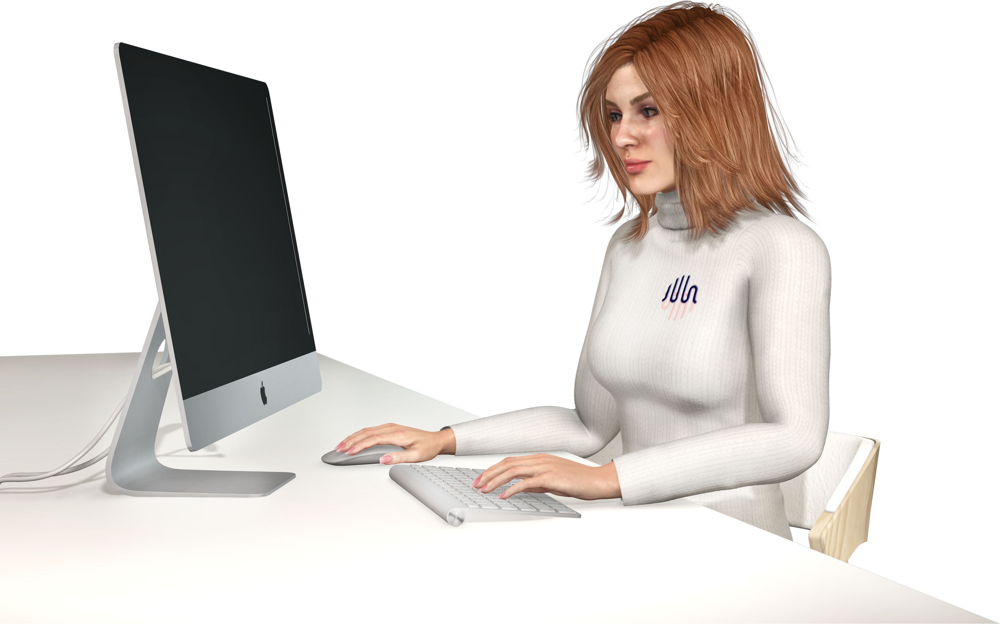
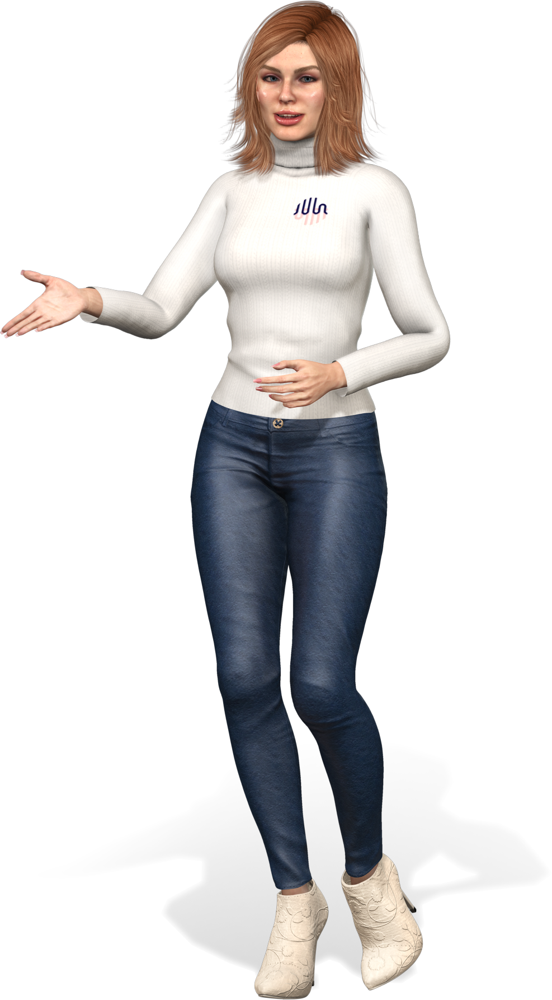
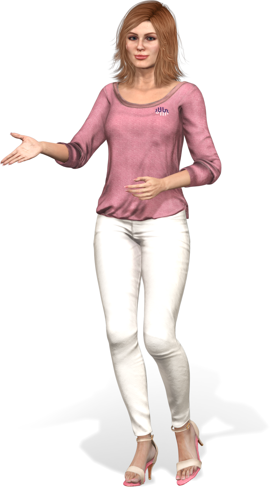

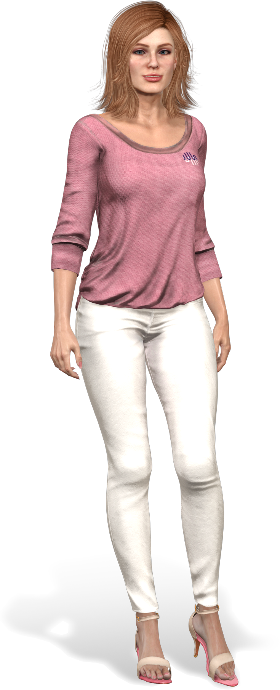
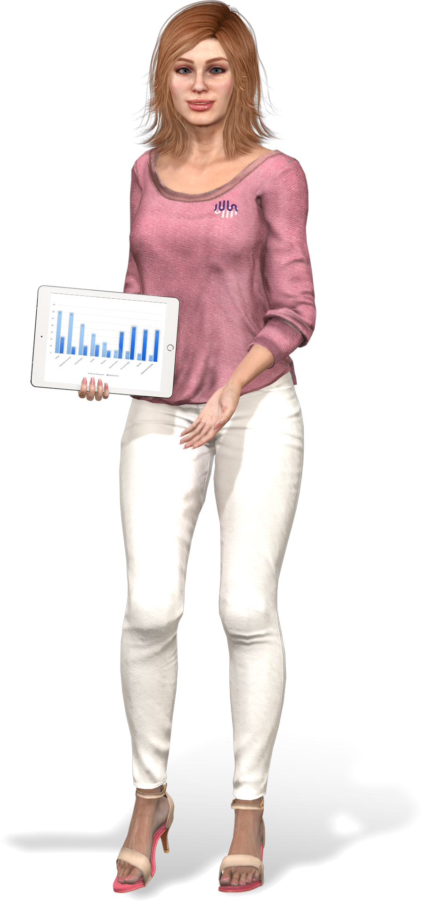
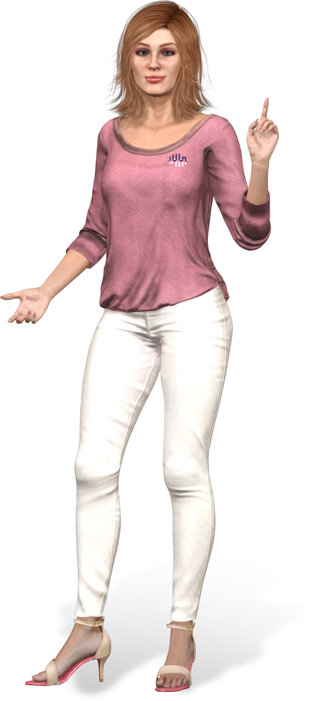
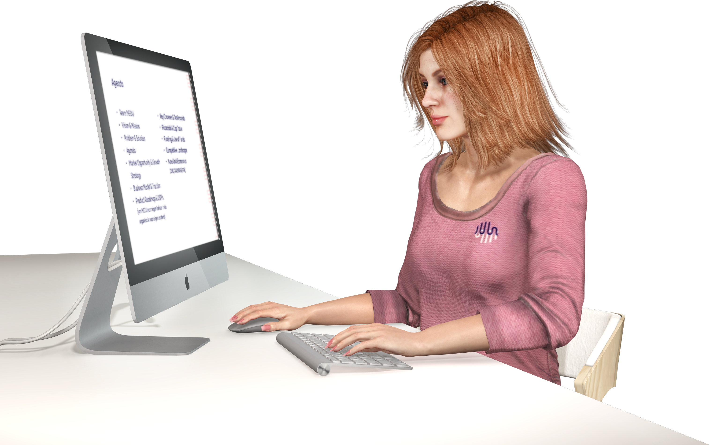
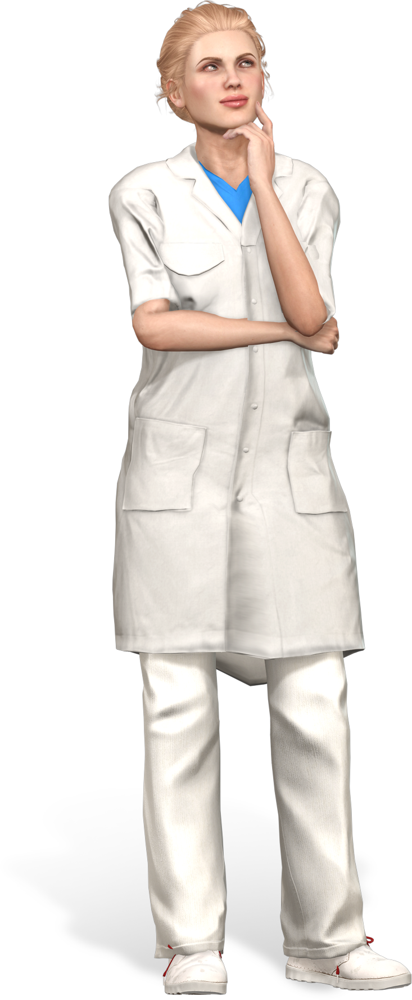
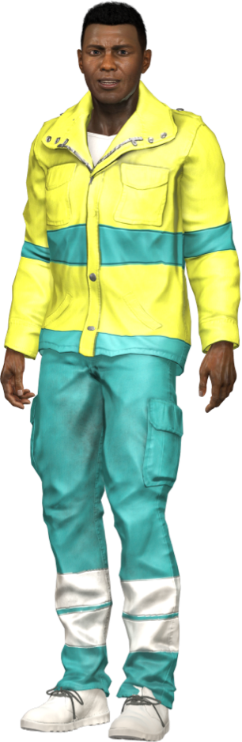
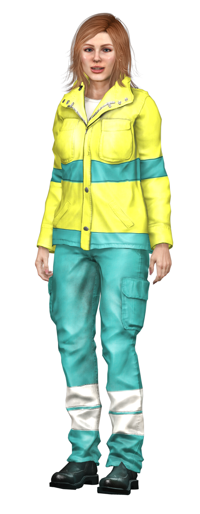
guide voor marketing en onboarding. arts bij klinische content. ambulance bij acute zorg en BHV.
Altijd op merkkleur: dark blue, darker pink of light pink. Nooit op een foto of niet-merkkleur.
Voeten op de onderrand uitlijnen. Rechter helft van het vlak is de natuurlijke positie.
Het merk spreekt zorgprofessionals als gelijken aan: je-vorm, korte zinnen, geen uitroeptekens behalve in CTA's. Productnamen en de meeste UI-labels zijn lowercase.